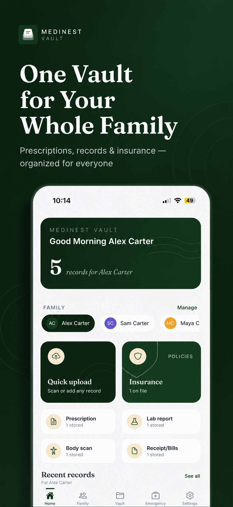

Records & Documents
Keeping Health Records for the Whole Family
Most people don't set out to build a records system — it happens by accident, one prescription and one lab report at a time, until nothing can be found. Health records for a family work best when the structure is decided up front: one vault, one profile per person, one place to look.

A simple structure that scales with your family
MediNest's home screen is the shape this should take: a family switcher at the top, quick upload for anything new, and categories — prescriptions, lab reports, body scans, receipts, insurance — visible at a glance. Add a new family member any time, and their records start from the same clean structure.
Getting started without a backlog project
- Add profiles for the people you're keeping records for.
- Start with what's most urgent — current prescriptions, upcoming appointments, allergy info.
- Scan older documents gradually as you come across them; there's no need to digitize everything on day one.
- Use search and filters to confirm everything's findable as your vault grows.
Frequently asked questions
What's the easiest way to keep health records for a family?
Use one app with a separate profile per family member instead of one folder for everyone. MediNest structures health records for family use this way by default, so nothing gets mixed up between people.
How do I move existing paper health records into a digital system?
Scan each document with MediNest's camera capture, confirm the family member and category, and it's filed. There's no bulk import needed — most families add records gradually as they come up.
Health records for everyone, in one place
Free to start. No credit card required.
Get Notified at Launch